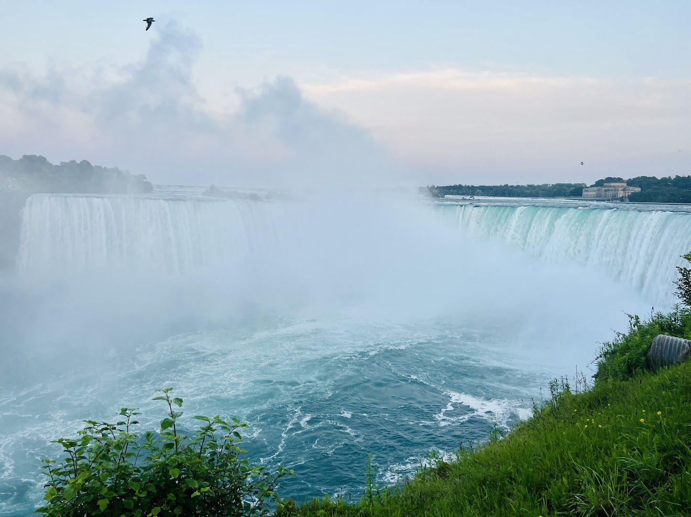
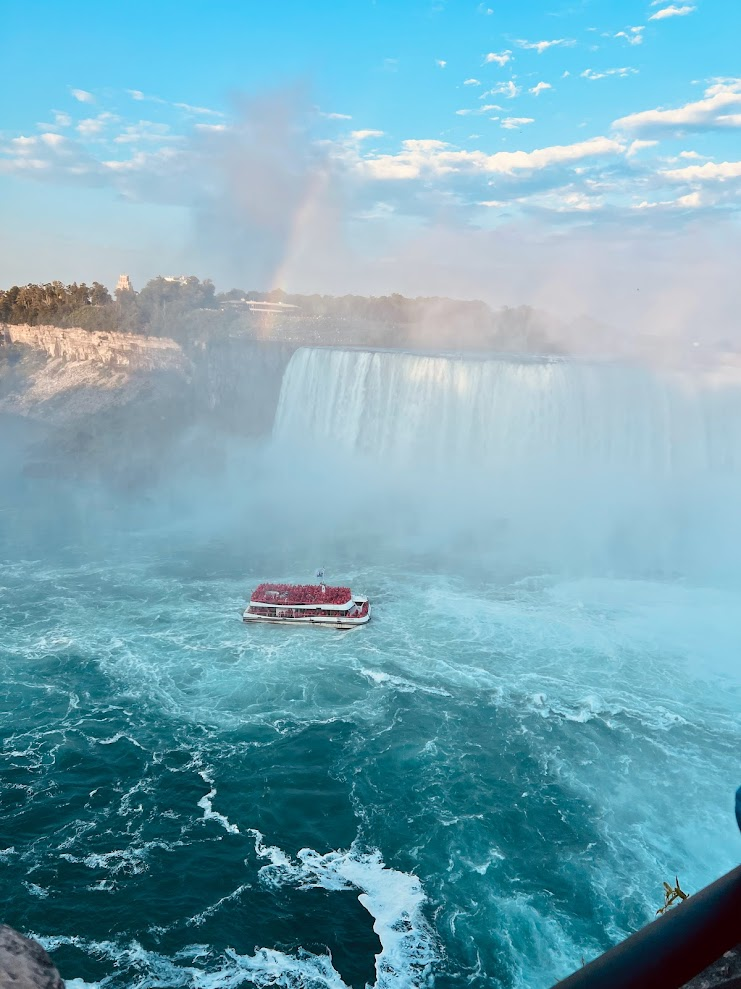
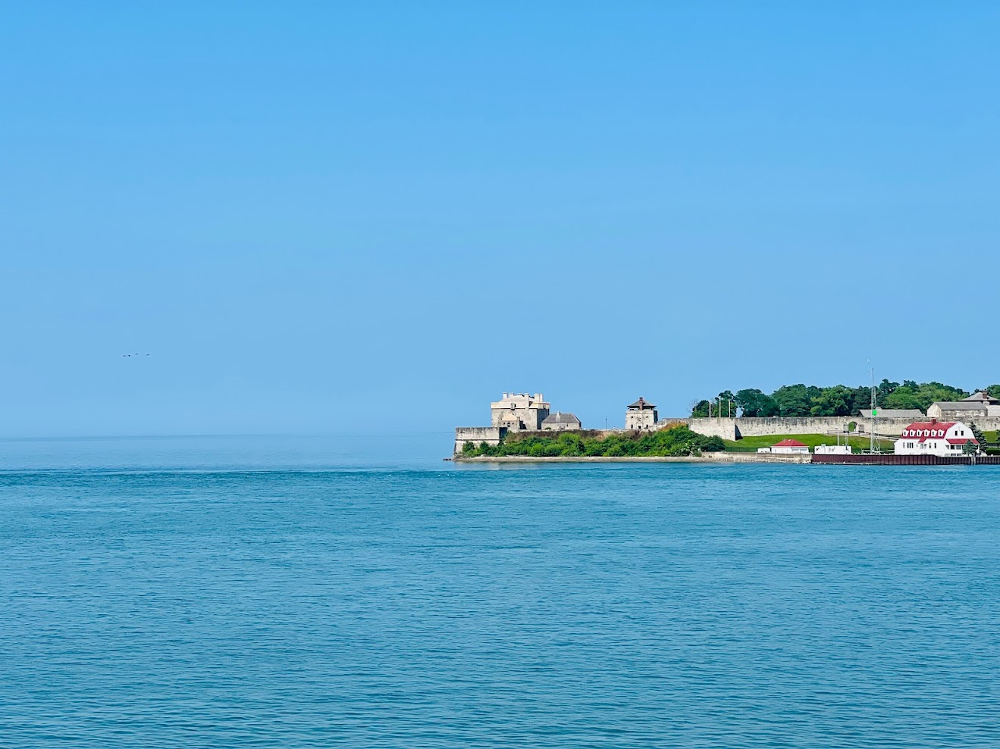

There are some places you see in photos for years, and when you finally visit, they still manage to feel unreal. For me, Niagara Falls was exactly that kind of place.
I went on this trip with my favorite person — my wife. Traveling with her always makes every place more meaningful, and this trip was no different. We spent two days exploring the Canadian side, and it turned into one of those trips that feels simple at the time, but becomes a lasting memory later.
We started our journey in Toronto, a city full of life, modern buildings, and a beautiful waterfront atmosphere. After spending some time there, we drove toward Niagara Falls. The closer we got, the more excited we became — but nothing really prepares you for that first view. When we finally saw the falls, it honestly felt unreal. The sound, the mist, the power of the water — it's something you don't just "see," you feel it in your body.

That first view of Niagara Falls — nothing can prepare you for it
🚤 Hornblower Boat Ride Experience
One of the most unforgettable parts of the trip was the Hornblower Niagara Cruises boat ride. We wore the red ponchos and slowly moved closer and closer to the falls. Within minutes, everything turned into mist and water spray. It felt like standing inside a moving wall of water.
The sound was loud, powerful, and overwhelming — in a good way. It's one of those experiences that makes you just stop thinking and fully live in the moment.

Hornblower Niagara Cruises — red ponchos, mist, and the roar of the falls
🌆 Evening Around the Falls
The area around the falls is full of energy — restaurants, walking paths, attractions, and people from all over the world. In the evening, everything changed again. The falls lit up with colors, and the whole view became calm and almost dreamlike. We walked slowly, took photos, and just enjoyed the atmosphere without rushing anywhere.
On the second day, we visited Niagara-on-the-Lake, a small and peaceful town not far from the falls. This place felt like a completely different world — quiet streets, flowers everywhere, small local shops, and a very relaxed atmosphere. It was the perfect contrast to the powerful energy of the falls. We walked around slowly, had simple moments together, and enjoyed how peaceful everything felt. A soft ending to an exciting trip.

Niagara-on-the-Lake — quiet streets and a completely different world
💙 Final Thoughts
This trip wasn't just about visiting a famous landmark. It was about traveling with my favorite person, experiencing nature at full power, slow walks and quiet conversations, and collecting small memories that stay longer than photos.
From the busy feel of Toronto, to the powerful beauty of the Hornblower boat ride, and the calm charm of Niagara-on-the-Lake, every part of the journey felt balanced and meaningful.
If you are planning a short getaway, I highly recommend visiting the Canadian side of Niagara Falls. It's not just a destination — it's a full experience packed into just a couple of days.